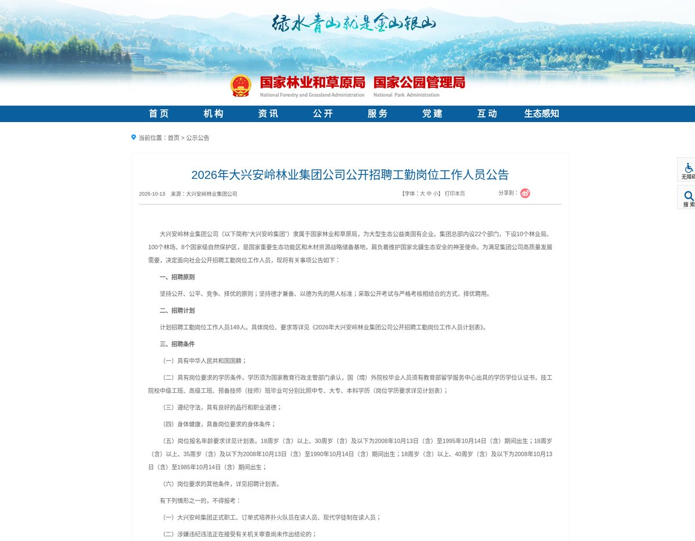
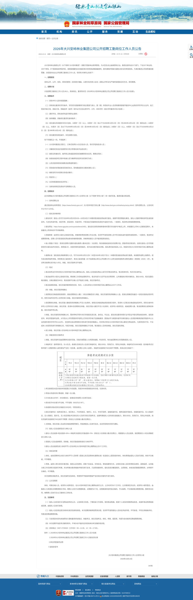
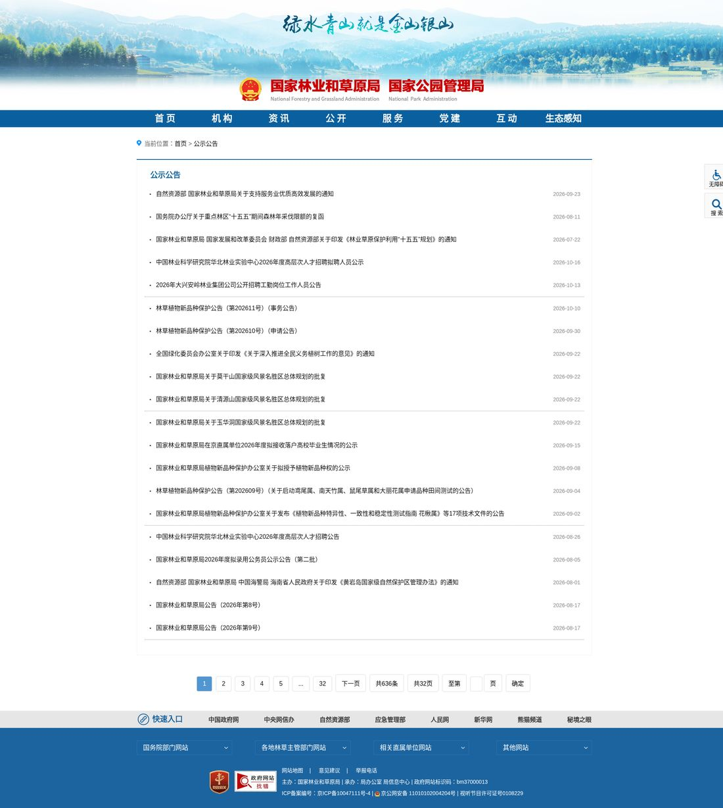
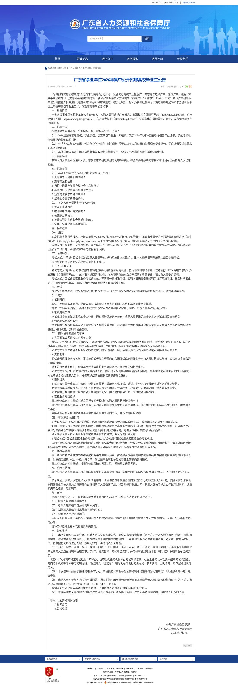

岗位要求的
地层
19 个地址、29 次提交抓回来，其中一份省级公告拖出 5 张岗位表——9,200 个岗位（两份公告）沿垂直方向切开，看门槛是怎么一层层沉下去、又在哪里断掉。每一行都带编号：这份表不是总结，是现场记录。

四条结论，每条后面都有证据编号
如果只看一屏，看这四条。每张卡左上角的 C-0x 是结论编号，卡内箭头指向的 E-0x / A-0x 是它可以被追溯到的那条记录——翻到对应小节能看到截图、URL 和会话 ID。
门槛不写在“技能”里
学历是硬筛，专业是软筛。9,200 个岗位里 72.6% 卡本科、14.6% 卡硕士及以上、4.5% 卡博士；广东那 9,169 行每一行都填了专业，一个「专业不限」都没有。只有林草局那 31 行没有专业字段——那份 PDF 只给了岗位名・单位・学历・人数，那是没采集到，不是不设限，两件事不能混着说。顺序本身就是权重。（C-01 / C-02 → E-03）
真正的稀缺在交叉处
专业榜前四名里两个是教师方向：「学科教学硕士」1,414 +「课程与教学论」919，合计 2,333 个岗位（25.4%）；紧随其后的是临床医学 808、会计学 771。地区榜第一是湛江，不是广州。读专业榜，读到的是产业结构，不是偏好。（C-02 → E-03）
采样方案：为什么是这 19 个地址
不抓商业招聘平台（反爬风控与合规都不适合公开演示），只抓公开但难抓的源：政府公告、事业单位招聘详情页、挂 xlsx／pdf 附件的通知。它们共同的特征是——页面要靠浏览器渲染、附件藏在链接里、同一台服务器时好时坏。
| 源 | 地址 | 为什么选它 | 拿到什么 |
|---|---|---|---|
| 国家林草局 · 公告列表 + 详情 | 10 | 列表→详情两段跳，附件是 PDF 岗位表 | 8 页正文 · 2 个 PDF |
| 广东省人社厅 · 事业单位招聘 | 8 | 详情页挂 xlsx 附件，正是最难的那一类 | 5 张岗位表 · 9,169 行 |
| 浙江省人社厅 · 招聘列表 | 1 | 换一个省份，检验是否只在广东能跑 | 页面能开，但内容空 |
- hrss.gd.gov.cn 的招聘列表页：navigation timeout，连试 4 次都没开。
- 同一份公告（post_4848983）：提交 6 次，成功 2 次、失败 4 次——一次是建会话时 HTTP error，三次是导航超时。
- hrss.gd.gov.cn 的另外一个详情页：同样超时；浙江那页能开但抓不到岗位。
所以真实账目是：19 个唯一地址，29 次提交尝试，20 次成功。同一页反复失败不是重试没用，是那台服务器对学生时段以外的访问不稳定——这件事只能写出来，不能藏。
同一套字段，吃两种源
两类源的表头完全不同：一边是 xlsx 里的「考区／单位代码／岗位代码」，一边是 PDF 里的「序号 / 单位／岗 位／学历要求」。归一器把它们映射到同一套 11 个字段，于是可以并排放进一张表。
| 源 | 类型 | 表数 | 行数 | 这一源真填上的字段 |
|---|---|---|---|---|
| 广东省人社厅 · 集中公开招聘 | xlsx × 1（5 个 sheet） | 5 | 9,169 | 岗位代码・学历・学位・专业・人数・部门・等级 |
| 国家林草局 · 大兴安岭工勤岗 | pdf × 1 | 1 | 31 | 岗位名称・单位・学历・人数 |
| 归一后 | 同批 2 个来源 | 6 | 9,200 | 11 个字段，缺的那列留空、不猜 |
证据：session_5eac7377（广东，5.2 s） + session_b881d097（林草，7.5 s），同批 batch-1792437271749。归一表里 岗位 空 9,167 行——因为广东那份公告只有岗位代码与岗位职责，没有岗位名称；这个空格不拿别的东西填。
剖面：门槛是怎么沉下去的
同一份数据，画成折线是趋势，画成柱是排序，画成环是占比，画成地层是次序——选错图，结论就会被读错。所以先交代每种图该用在哪、这次用了没用，再给图。
层厚 = 岗位占比，越往下门槛越高。本科一层吃掉 72.6%，是整根柱子的主体；它的下沿就是断层——硕士及以上 14.6% 加博士 4.5%，只剩 19.1%。四层合计 9,170 岗（99.7%），余下 30 个不在这四档里：28 个是「高中及以上学历」（全部来自林草局那份工勤岗 PDF），2 个学历字段为空——它们没有被并入任何一层，也没有被丢掉。
- 大专 · 733 岗 · 8.0%
- 本科 · 6,681 岗 · 72.6%
- 硕士及以上 · 1,343 岗 · 14.6%
- 博士 · 413 岗 · 4.5%
- 未入层 · 30 岗 · 0.3%（高中 28 ＋ 空 2）
「研究生」为什么不是单独一层：原始学历列里没有「研究生」这个取值——它实际写作「硕士研究生以上」896 与「硕士研究生」447，归一器把两者并成「硕士及以上」1,343；「博士研究生」413 单成一档。同理「本科以上」5,427 ＋「本科」1,254 并为「本科」，「大专以上」719 ＋「大专」11 ＋「大专及以上学历」3 并为「大专」。凡是带「以上」的都表示最低门槛，不是只招该学历——这也是第三层叫「硕士及以上」而不是「硕士」的原因。
同一个 N=9,200 的专业频次放在这里做对照：地层看的是门槛的次序，这张看的是专业的热度，两者不是一回事，别互相代入。
口径：每个岗位对每个专业只记 1 票（旧脚本按单元格出现次数记，同一岗位在大专／本科／研究生三列都写「会计学」会算 3 票）。会计学因此从 1,241 降到 771，靠前的排序也跟着变——数字变化主要来自这条口径修正，不是那 31 行的加入。图上 8 行与 06 节下载的 CSV 8 行一致。
六种图，这次用了四种
这一段不属于「剖面」本身，是画图前的方法交代，放在 04 节末尾作附记。下面六张卡翻面是「这张图该怎么用、这次用在哪」。折线与散点这次没有画——不是忘了，是这次的数据撑不起它们的口径；占比那一格换成了地层剖面而不是环，背面上都写了原因。
点一下卡片翻面，背面写的是“为什么这张图只能这么用”。
折线要时间连续、间隔相等，缺一周就得断笔。本次只有 2026-10-20 一个快照，画折线等于凭空造趋势，所以不画。
类别之间没有顺序关系时用柱；若强行排序成折线，会伪造出“趋势”。上面专业榜那张就是柱形（横排）。
四层相加等于整体，且层与层有序——门槛由低到高。环只能给比例，给不了“深度”；改成垂直堆叠后，厚度同时表示占比与顺序，断层的高度也一并画了出来。这次要的正是后两件事，所以没用环。
散点要的是离群点，得有每个单位的岗位数。本次只输出了单位总数 4,519，没有逐单位分布，硬画就是拿总数冒充分布。
表格不是退化形式。要让人能核对，就必须给行，不能给摘要。03 节归一表、07 节会话台账都是它。
一张卡只放一个数。放两个数，读者就只记住一个。首屏三个大数字与 03 节的账目卡都是它。
勘验记录：每一条都能点开看原页
下面每张卡对应一次真实的云浏览器会话——图是云端截的原图，编号是那次会话的 Session ID，URL 点开就能核。时间都是 2026-10-20 凌晨这几次实跑。

真会话
同一 Session
附件 3 枚行动：这张表能改写三个判断
表本身不是成果。9,200 行真数据至少能改掉三个凭直觉会做错的判断——每一条都给出反直觉的差值。
- 「广州机会最多，当然先投广州」
- 「事业单位就是行政岗，跟专业没什么关系」
- 「本科学历已经把大部分人筛掉了」
- 广州只有 546 个岗位（5.9%），湛江 1,320（14.3%）、梅州 1,059（11.5%）——重心在粤东西北
- 不是「行政一条街」：学科教学硕士（1,414）＋课程与教学论（919）＝25.4% 是教师岗，但紧跟着的就是临床医学（808）与会计学（771）
- 72.6% 就卡在本科，本科不是过线而是主力；硕士及以上 14.6%、博士 4.5%
可复用：一份配方，换个站点就能跑
七个字段，改三行就能换一个行业。它不是工具，是一份可被检验的采样方案。
表来自 2026-10-20 凌晨的 29 次真实提交；失败与重试记录见 03 与 07。
这一页只给数据，不给入口——这里没有产品链接，也没有转化按钮。想接着用这批数据做点什么，在页脚。
附录：账目、失败与方法局限
这一节是给愿意核对的人准备的。数字不好看的部分，也一起放着了。
会话台账 · 20 个 Session / 29 次提交 / 19 个唯一地址A-01 +
| 阶段 | 提交 | 成功 | 失败 | 用时 |
|---|---|---|---|---|
| 首轮横向 | 13 | 11 | 2 | 164s |
| 招聘源 | 8 | 6 | 2 | 48s |
| 广东岗位表重试（同一 URL） | 6 | 2 | 4 | 5.4s |
| 分项合计 | 27 | 19 | 8 | 217.4s |
上表按阶段归集，每行「提交 = 成功 + 失败」，合计 27 次由分项相加得出。
首屏与正文引用的 29 次提交 / 20 成功 / 9 失败 是全文口径，比上表多 2 次不属任一批次的单点尝试：浙江人社列表页 1 次（能打开但没有岗位，记成功）与 hrss.gd.gov.cn 另一个详情页 1 次（超时，记失败）。
这 2 次单独列出、不做平滑——合计对不上总数时，正确做法是把差额写出来，而不是把分项改圆。失败构成见 A-02：8 次 navigation timeout（列表页 4 ＋ 同一公告 3 ＋ 另一详情页 1）＋ 1 次 HTTP error，合计 9。
用时为各阶段实跑耗时之和；超时的那几次没有计入。
失败清单 · 9 次，全在同一个站A-02 +
方法局限 · 这份报告不能证明什么A-03 +
复现步骤 · 想自己跑一遍A-04 +
在 source/ 里建 public/，把 采集台界面.html 复制成 public/index.html（server.js 只认这个入口），再跑 node server.js，开 http://127.0.0.1:8901。引擎选「Lexmount 云浏览器」，贴公告详情页地址，必要时勾「列表页展开详情」再点开始。凭证走环境变量（LEXMOUNT_API_KEY / LEXMOUNT_PROJECT_ID / LEXMOUNT_BASE_URL），每个 Session 跑完都显式 close，不挂账。
2 · 归一成同一套字段
跑完在「汇总表」点「归一为统一表」：不同公告的 xlsx / PDF 表头会被映射到 11 个字段。要跨批次聚合就去「历史记录」勾几份 → 合并选中。
3 · 重算统计
批次会落到 runs/batch-*.json，然后跑 python canon_stat.py runs/batch-1792437271749.json，输出学历构成、专业频次、地区分布、单位数、聘用人数合计。
4 · 看报告
线上 / 是单文件版（约 1.58 MB，图已内嵌，可下载后双击打开，适合离线看与打印）；/report/ 放的是多文件版：图按需加载，首屏 HTML 约 105 KB。要截图或打印就用单文件版，或用 python -m http.server 8899 起本地服务访问多文件版。
环境依赖：Node 22+；.doc 转 .docx 需要 LibreOffice；PDF 用 bin/pdftotext/pdftotext.exe、云浏览器 CLI 放 bin/browser-cli.exe（两个二进制不在仓库里，需自备）；xlsx 只用 tar 解包 + XML 解析，不依赖 Office。